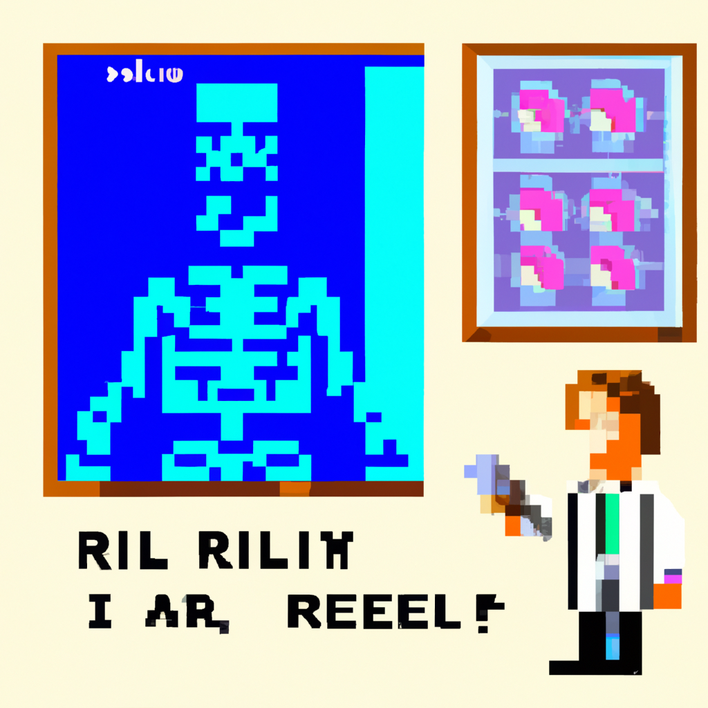

Why AI will never replace the radiologist
Artificial intelligence (AI) has made significant advancements in various fields, including healthcare. In radiology, machine learning algorithms have shown great potential in helping with the diagnosis and analysis of medical images. However, despite these advancements, I firmly believe that AI will never fully replace the radiologist.
One of the main reasons for this is the complexity of the human body and the vast range of conditions that can be detected through medical imaging. While machine learning algorithms can be trained to recognize patterns and anomalies in medical images, they still lack the comprehensive understanding and clinical experience that a radiologist possesses. Radiologists are trained to not only interpret images but also to consider the patient's medical history, symptoms, and other relevant information when making a diagnosis.
Furthermore, radiologists play a crucial role in patient care beyond interpreting images. They often collaborate with other healthcare professionals to develop treatment plans, provide guidance during procedures, and communicate the results to patients. This human touch and interaction cannot be replicated by AI, as it requires empathy, communication skills, and a deep understanding of the patient's unique circumstances.
Another important consideration is the potential for errors and biases in machine learning algorithms. These algorithms are trained on vast amounts of data, which can sometimes be incomplete or biased. If the training data is not diverse enough or does not include enough cases of rare conditions, the algorithm may struggle to accurately detect these conditions. Additionally, algorithms can also be susceptible to bias, as they learn from the patterns present in the training data. This can lead to disparities in healthcare outcomes, especially for underrepresented or marginalized populations.
Lastly, the adoption of AI in radiology must also consider the ethical and legal implications. Who takes responsibility if a machine learning algorithm fails to detect a critical condition? How do we ensure patient privacy and data security when using AI in healthcare? These questions need to be addressed before widespread adoption can occur.
In conclusion, while AI has the potential to greatly enhance radiology practice, it will never replace the expertise and skills of a radiologist. The human touch, clinical experience, and critical thinking that radiologists bring to patient care are essential and cannot be replicated by machines. AI should be seen as a tool to assist radiologists in their work, allowing them to focus on more complex cases and providing a second opinion. By combining the strengths of AI and human expertise, we can achieve the best outcomes for patients and improve the quality of healthcare.